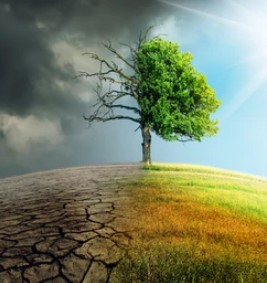
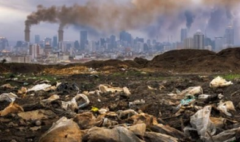

Climate changs is the long term changes in the climate that occour over very long periods of time, latly the rate at which the climate is changing has increased rapidly and thus the only conditions that us humans are used to on earth are also changing. There are different opinions on climate change, some people deny it completly, some people believe that it is not very urgent, and some people just do not want to have to think about it. Because there are many people that do not recognize the full extent of climate change, enough progress has not been made. One of the biggest contributers to climate change is food waste, nearly 25-30% of food is lost or wasted every year and this is a huge source of greenhouse gases. Through this how to guide I will inform you on how to reduce your ecological footprint through reducing your food waste.
 